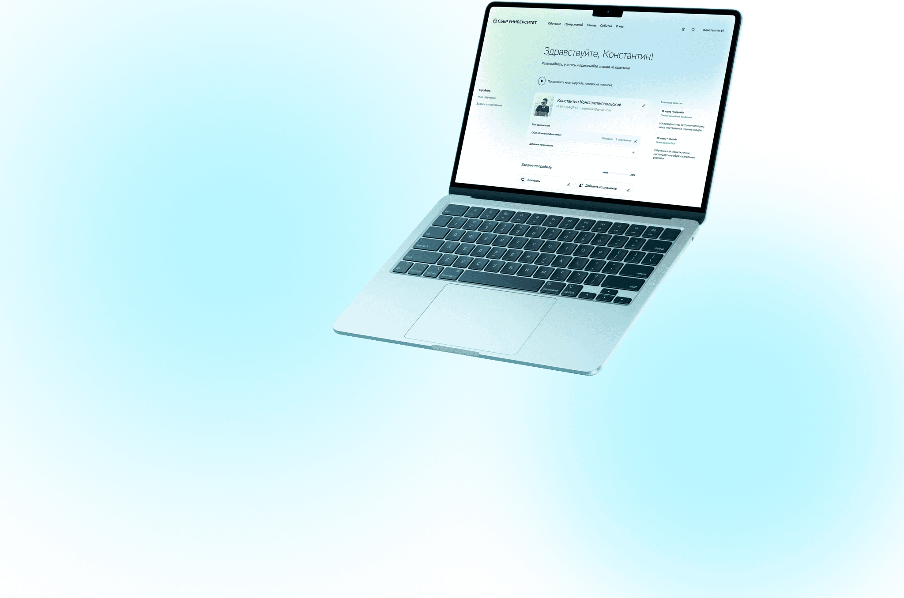
Спроектировал новый путь подачи заявок для юридических лиц и синхронизировал его с процессами для физических лиц и иностранных граждан.
От выбора курса до оформления. Сценарий, в котором каждый пользователь проходит только нужные шаги.
Разные пользователи.
Один понятный опыт.
Упростить и унифицировать оформление заявок для физических и юридических лиц, учитывая различия в требованиях и необходимых документах.
Существовавший общий путь приводил к лишним шагам и оставлял корпоративных клиентов без нужной информации. Это увеличивало количество брошенных заявок и вопросов.
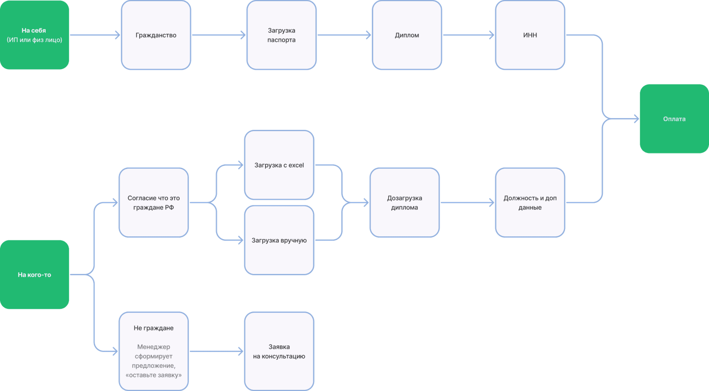
Сначала логика.
Затем интерфейс.
Мы разделили оформление заявки для физических и юридических лиц. Внутри каждого пути учли гражданство, наличие паспорта, количество слушателей и способы оплаты.
Начали с User Flow: зафиксировали все шаги пользователя, согласовали объём работы и получили общую основу для макетов. Решение уточняли итерациями вместе с командой Сбера.
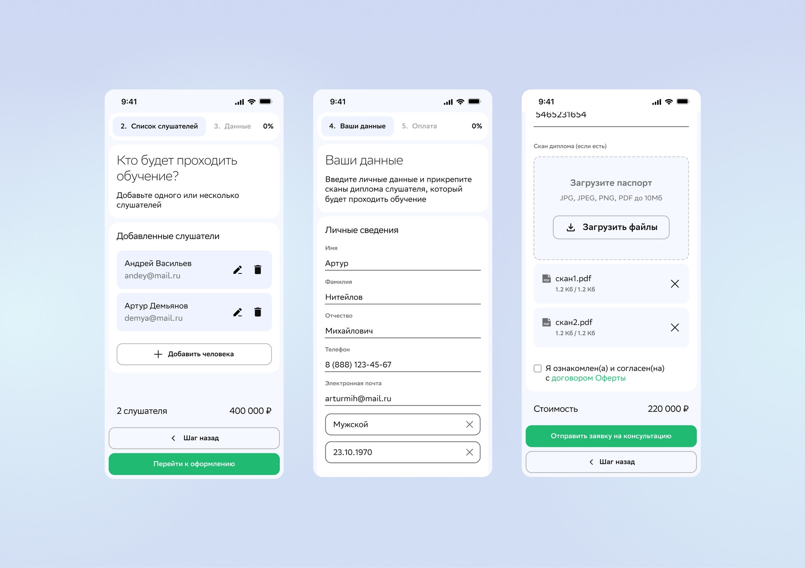
Информация рядом.
Действие в фокусе.
Разделили экран на две части: информационную и функциональную, для заполнения. Этот подход проходит через весь сценарий оформления заявки.
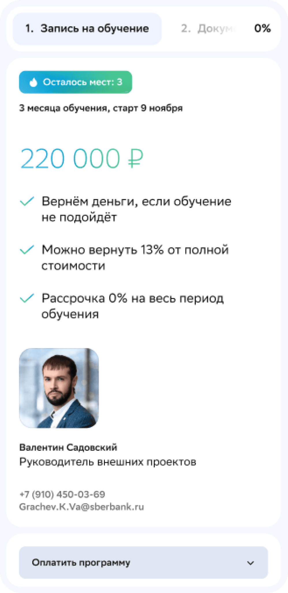
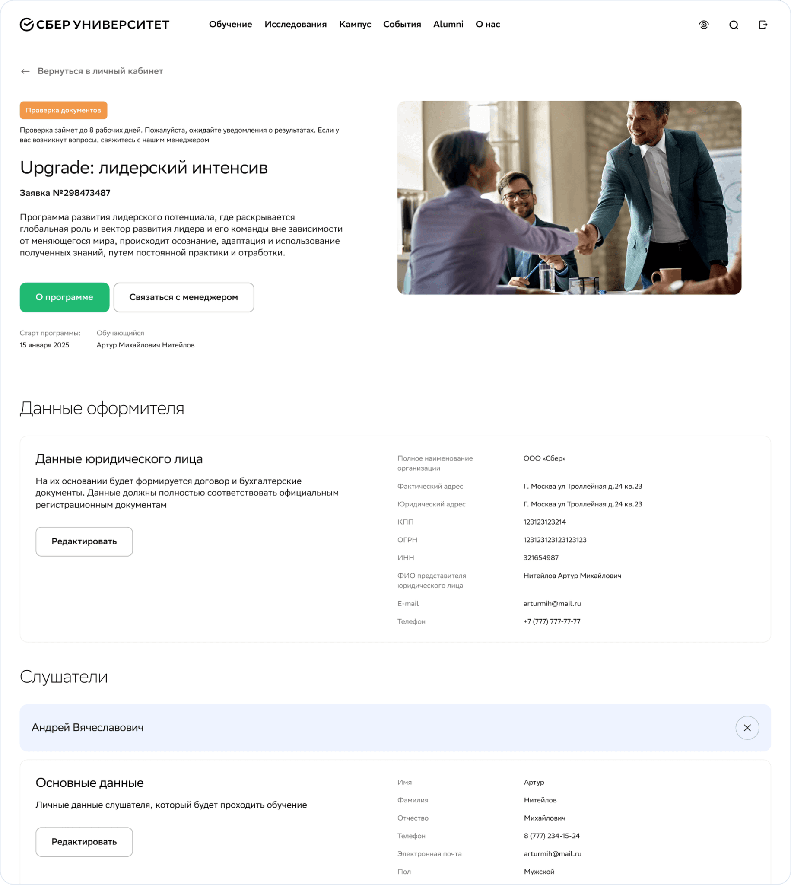
Компоненты, которые
держат всё вместе.
Использовали библиотеку проекта и добавили новые паттерны для специфических сценариев юридических лиц. Систематизация компонентов помогла поддерживать единый интерфейс и ускорять работу.
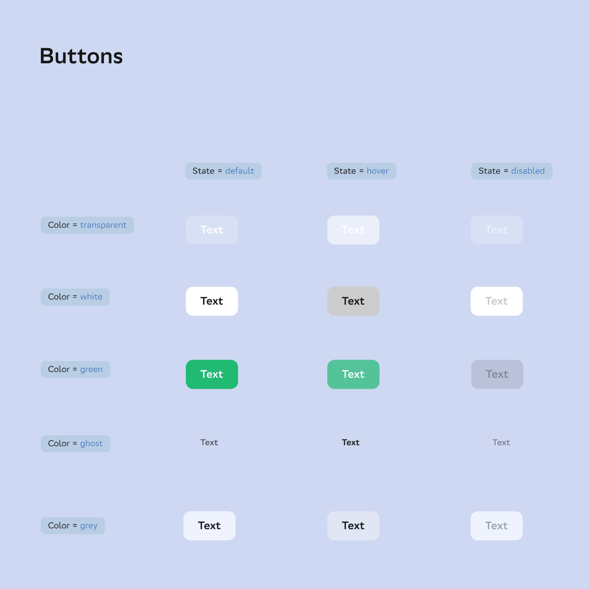
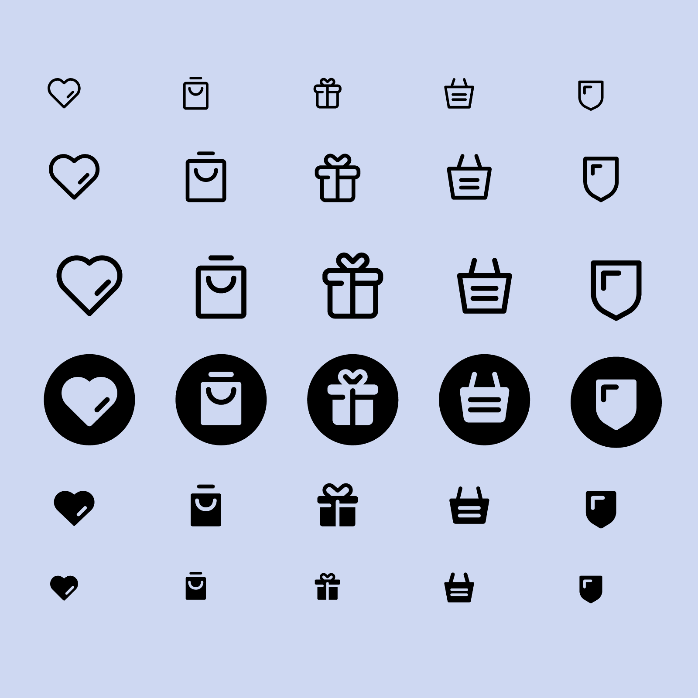
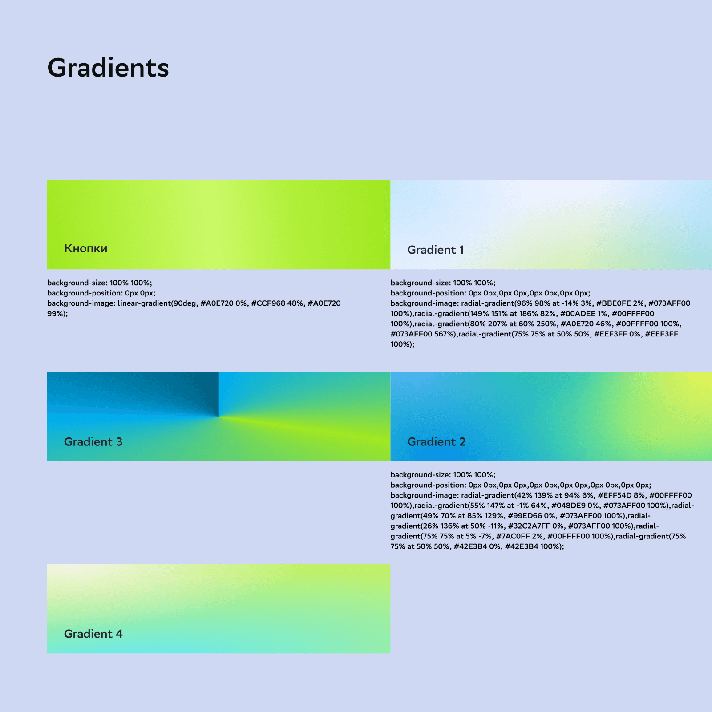
На любом экране.
В светлой и тёмной теме.
Большое количество адаптивов и тёмная тема увеличивали объём каждой правки. Я экспериментировал с оптимизацией построения адаптивов, чтобы быстрее переносить изменения между версиями.
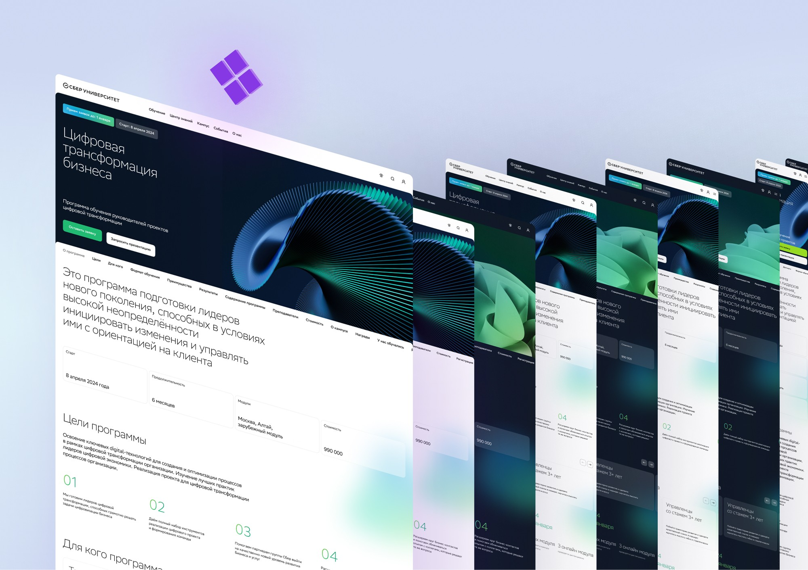
Всё обучение
в одном месте.
Спроектировали персонализированный личный кабинет: быстрый доступ к курсам и событиям, разделение заказов физических и юридических лиц, подсказки для заполнения профиля и предложения для клиентов.
Я собрал функции и лучшие практики конкурентов и аналогичных продуктов. Вместе с командой выбрали решения, подходящие для концепции и потребностей пользователей.
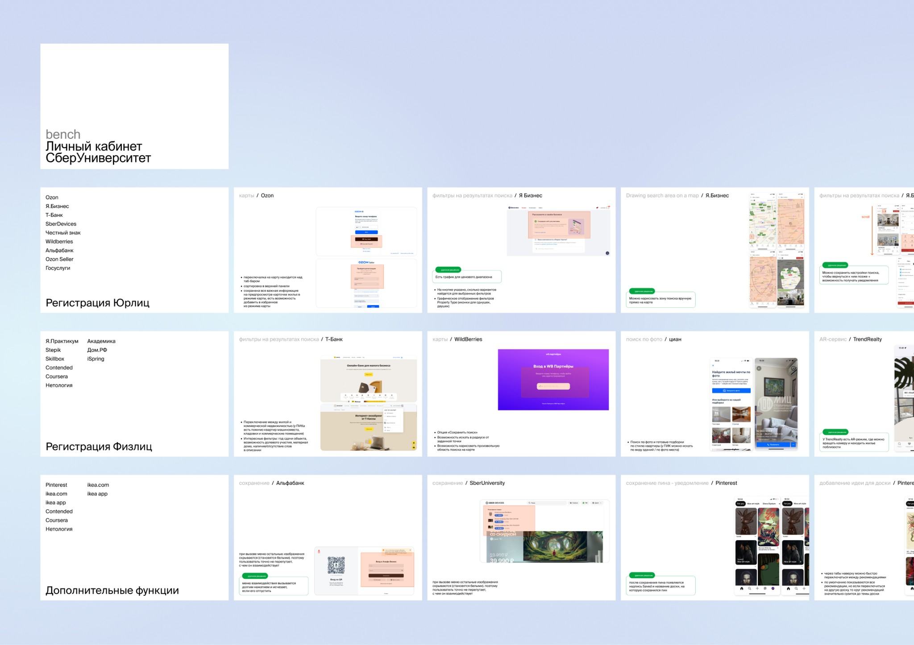
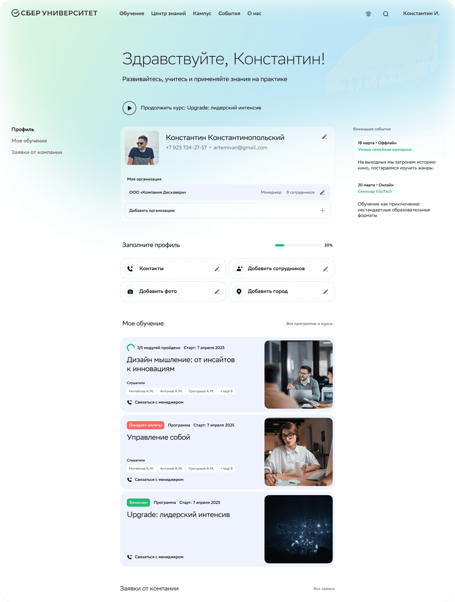
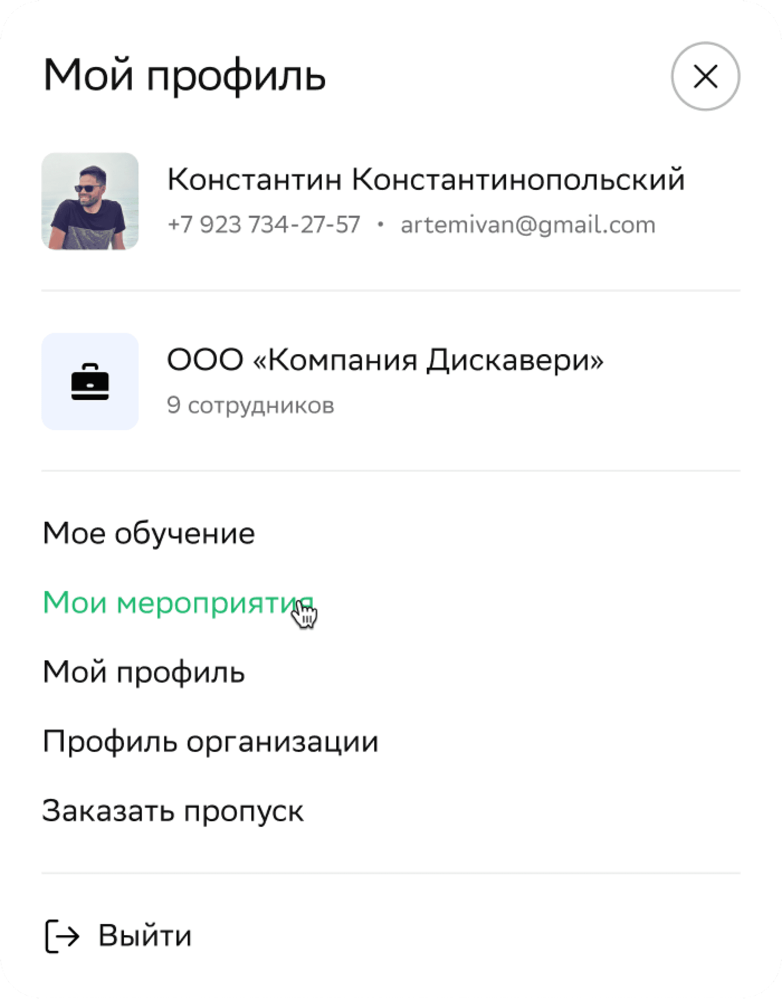
Меньше лишних шагов.
Больше ясности.
01Новый разветвлённый
путь подачи заявки
02Релевантные шаги
для разных пользователей
03Систематизированные
компоненты и макеты